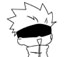
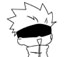

Gojo desempeña el papel de maestro de la clase de primer año en la escuela de magia de Tokio, Satoru es una persona compleja, ya que generalmente es indiferente y juguetón con personas como sus estudiantes y compañeros de trabajo, pero antipático y cruel con los ancianos de los altos mandos del jujutsu.
Tiene mucha confianza en sus habilidades y en su reputación como un poderoso hechicero, despreciando casualmente las amenazas personales de Sukuna y diciendo que podía derrotar al Rey de las Maldiciones incluso si resultaba ser una pelea intensa.
Tiene una gran fuerza física para combatir poderosas maldiciones sin problemas, posee una gran velocidad,logrando seguir los movimientos de una maldición de Grado especial sin esfuerzo y lanzar puñetazos y patadas casi imperceptibles. Se ha demostrado que puede moverse más rápido de lo que el ojo puede percibir, y en su mayor hazaña de velocidad, viajó una gran distancia en una pelea y regresó al campo de batalla antes de que su oponente se diera cuenta de que incluso se había ido. Satoru ha demostrado ser bastante táctico y ser capaz de averiguar qué está planeando su oponente con la información suficiente.
Es un espíritu maldito, considerado el Rey de las maldiciones desde hace más de mil años. Se cree que siempre fue una maldición, pero en realidad fue un hechicero humano antes de ser sellado y encarnado como espíritu maldito, en el que su inmenso poder era tan fuerte que tuvieron que ser separados sus veinte dedos.
Sukuna es una calamidad andante. Fue creado como un personaje cruel, narcisista, depravado y supremamente arrogante dentro de la historia. Está inspirado en el demonio Ryomen Sukuna del libro clásico japonés. Sukuna nunca tuvo esposa o familia en su vida como humano, y que era menos temido como humano que Satoru Gojo debido a lo vicioso que era el mundo de las maldiciones en la época en que vivió.
Se desconoce la fuerza real del cuerpo de Sukuna. Haciendo uso del cuerpo de su recipiente, Yuji Itadori, ha demostrado ser poseedor de una fuerza sobrehumana capaz de destruir todo a su paso con simples golpes e incluso es capaz de lanzar a sus oponentes a través de varios pisos de un edificio sin muchos esfuerzos.

. Yuji es un chamán de jujutsu de primer año en la Escuela Técnica de Magia del Área Metropolitana de Tokio, quien se adentró al mundo de la hechicería después de comerse uno de los veinte dedos pertenecientes a Ryomen Sukuna, un poderoso espíritu maldito, un ser manifestado a partir de la energía maldita de las emociones negativas que fluyen en los humanos.
Yuji ha sido descrito como ingenuo, reflexivo y adorable, todo mientras está poseído por un antiguo demonio. Lo visceralmente de su carácter mezclado con sus rasgos alegres contrasta a lo largo de su arco.Itadori es una persona honesta, amigable y le resulta bastante fácil socializar con otros durante un primer encuentro. Se preocupa mucho, no sólo por sus camaradas, sino por cualquiera que vea y tenga voluntad propia, a pesar de lo profunda o superficial que sea su conexión con ellos. Le importa mucho el "valor de una vida" y con este fin se asegurará de que otros reciban una "muerte justa". Se enoja con facilidad ante la crueldad pura y el juicio injusto de otras personas.
Posee una enorme fuerza física, capaz de destruir paredes sin problemas o arrojar varios elementos pesados sin muchos esfuerzos. En varias ocasiones ha demostrado que se destaca por el uso de la fuerza bruta

es un joven hechicero que estudia en la escuela de magia de Tokio. Al heredar la técnica maldita del Clan Zenin, se convirtió en el objetivo principal de la familia, tratándolo de comprar por una gran suma de dinero.
Megumi es generalmente un joven bastante tranquilo, serio y reservado, como comentan Nobara y Yūji cuando este último se queja de que Megumi nunca les cuenta sobre él mismo. Aunque no muestra mucho interés por lo que suelen hacer sus compañeros, siempre está en compañía de ellos y suele acompañarlos a diferentes lugares, no pareciendo rechazar la idea de pasar tiempo con ellos.
Megumi tiene un potencial y habilidades equivalentes a las de Yūji y más tarde dio a entender que Megumi podría tener el mismo nivel que él algún día o incluso superarlo.También puede luchar e incluso derrotar a maldiciones de grado especial.
Nobara es una estudiante de hechicería de la escuela de magia de Tokio, bajo la tutela de Satoru Gojō. Fue transferida de Morioka,cuya exaltación y descaro contrasta con el altruismo y estoicismo de los otros estudiantes de primer año.
Nobara posee una alta tolerancia al dolor, intelecto táctico y una comprensión cuidadosa de las artes del jujutsu. Ha realizado técnica maldita llamada Destello oscuro que crea una distorsión espacial cuando el usuario entra en contacto con el impacto de la energía maldita en un lapso de 0.000001 segundos de un ataque físico. Su técnica hereditaria es la Técnica de muñeco vudú, lo que le permite usar un muñeco de vudú para atacar a su oponente desde la distancia golpeando un clavo con un martillo imbuido de energía maldita, de modo que las maldiciones sienten lo que ella inflige al muñeco.

Es un chamán de primer grado, exalumno de la escuela de jujutsu de Tokio y uno de los mentores de Yuji Nanami es un hombre muy inteligente y reservado que sabe separar el sentimentalismo del trabajo. Como uno de los mentores de Yuji, Nanami está en completo contraste con Gojo, que es mucho más franco y realista. Casi siempre tiene una actitud indiferente y parece muy distante y estoico en cualquier situación.
Bajo su apariencia dura, Nanami es un hombre amable con buenos valores morales. Su técnica maldita, Proporción, le permite crear puntos débiles en sus enemigos y golpearlos.
uta es un adolescente que es perseguido por Rika Orimoto, su difunta amiga de la infancia que ahora está maldita ya que ambos prometieron casarse cuando fuesen adultos
En noviembre de 2016, conoce a Satoru Gojō, un hechicero de jujutsu que lo convence a entrar a la Escuela Técnica de Magia del Área Metropolitana de Tokio.
Es un hechicero de grado especial y excompañero de clase de Satoru y Shoko, y por lo tanto un estudiante de Yaga. Su técnica maldita le permite absorber y controlar las maldiciones naturales y usarlas para el combate. Durante su tiempo en la escuela de Tokio, desarrolla un fuerte odio por las personas sin poderes mágicos hasta el punto de querer exterminarlos a todos para dar vida a un mundo de hechiceros únicamente, un acto que según él, impediría la creación de espíritus malditos y, en consecuencia, poner fin al ciclo en el que todos los hechiceros están atrapados.

Es un estudiante de segundo año, que utiliza la Técnica de Discurso Maldito. Debido al linaje del clan Inumaki, nació con marcas alrededor de la boca.
Siempre que diga una palabra como huye, cualquier objetivo que escuche la palabra se verá obligado a hacerlo. Debido a esta habilidad, tiene un carácter muy tímido y silencioso, y está acostumbrado a comunicarse solo con los ingredientes utilizados para preparar bolas de arroz.
 
